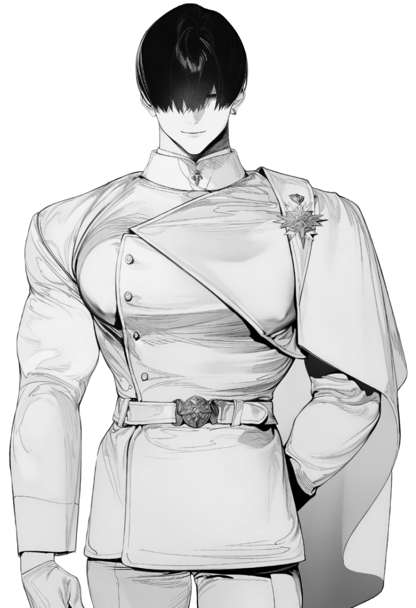
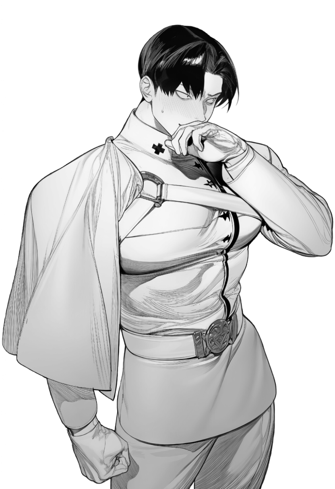
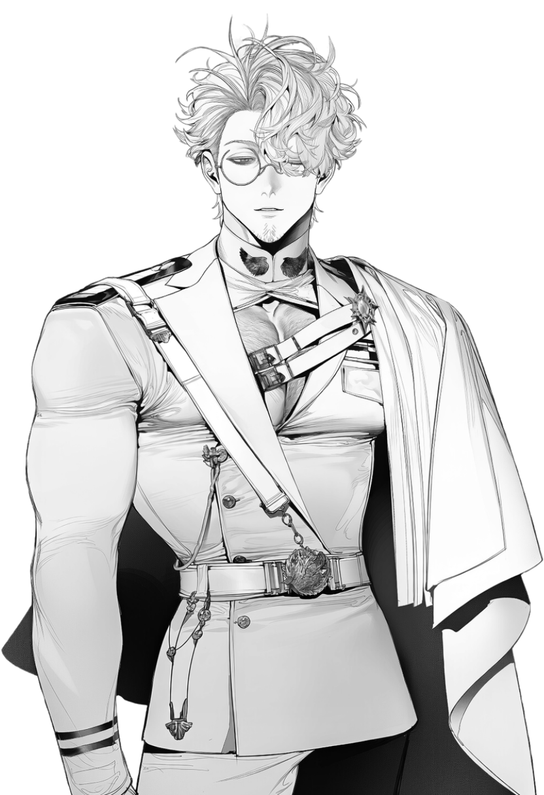
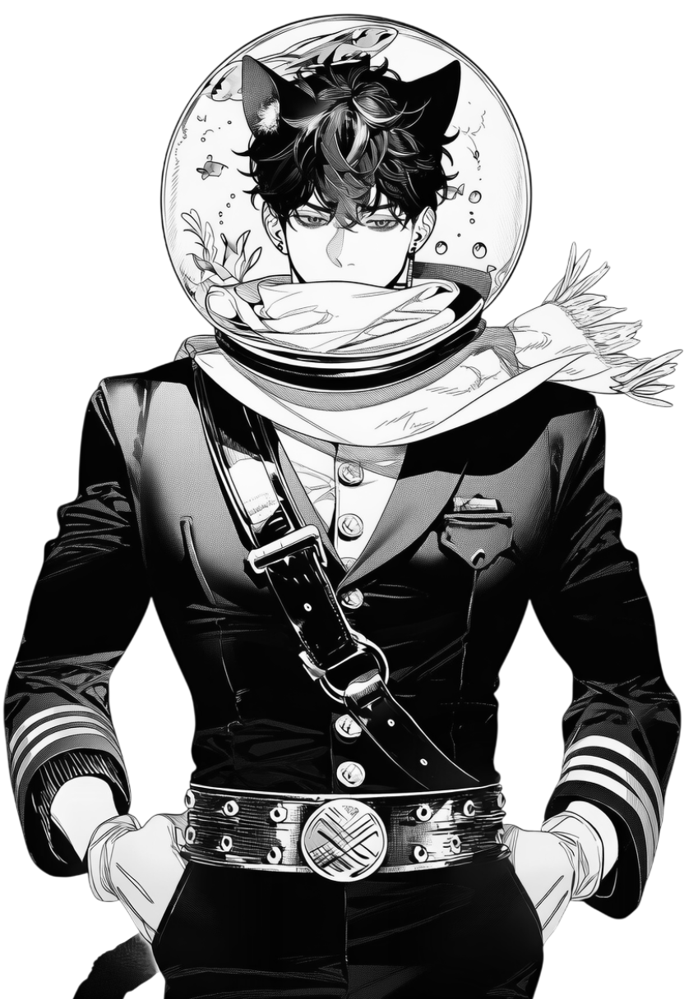

대사에서 이 이름으로 불립니다. (10자 이내)
각성자와 시민 곁에서 공명과 안정을 지키는 가이드들. 카드를 누르면 프로필이 열립니다.
테미스 한국 본부, TKH Tower. 뮤즈팀 가이드들이 현장 밖에서 보내는 하루의 조각들. 호감도가 오르면 숨겨진 조각이 열립니다.
가이드별로 주고받은 대화가 남습니다.
파장을 하나 고르고, 박자에 맞춰 공명을 끝까지 이어 가세요. 뮤즈 세 사람이 옆에서 함께합니다.
